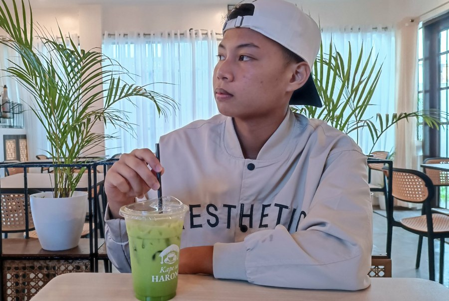
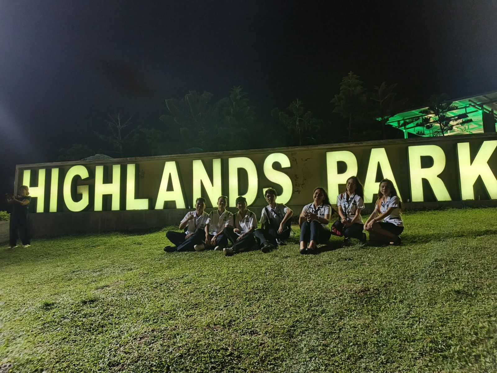

My top 3 goals
- To be the best version of myself
- To have a good physique
- To be successful
System online • CS101 Class Zine
1st Year BSCS • Bicol University
Step into my digital space, where a curious first-year Computer Science student shares his passions, his path, and the code-filled future he is building. Scroll down and get to know the person behind the screen.

Hello! I'm Vincent, a first-year BSCS student who is easygoing, open to learning, and determined to become a better version of myself while working hard to achieve success in life.
Determined to become a better version of myself.
Hello! My name is Vincent C. Quilala, a first-year BSCS student at Bicol University. I enjoy watching K-dramas and anime, listening to music, and hanging out with friends. I chose Computer Science because I dream of becoming a software engineer someday. I hope to learn different programming languages, improve my coding skills, and gain the knowledge needed to develop useful applications. I am willing to learn from challenges and mistakes as I work toward achieving my goals.
I'm interested in programming and technology. During my free time, I enjoy watching anime and K-dramas, listening to music, hanging out with friends, working out, playing online games, and participating in sports. I enjoy trying different activities and making the most of my free time.

I chose Computer Science because I want to become a software engineer someday. I'm fascinated by how technology works and how programming can be used to create useful applications and solve real-world problems. I believe studying Computer Science will help me develop the knowledge and skills I need to achieve my dream career.
| Subject | Day | Time |
|---|---|---|
| CS 102 Computer Programming | Monday | 4:00 PM – 7:00 PM |
| Physics for Computing | Tuesday | 1:00 PM – 2:30 PM |
| Mathematical Analysis | Tuesday | 2:30 PM – 4:00 PM |
| CS 101 Introduction to Computing | Wednesday | 9:00 AM – 12:00 PM |
| CS 102 Computer Programming | Wednesday | 4:00 PM – 7:00 PM |
| Physics for Computing | Thursday | 1:00 PM – 2:30 PM |
| Mathematical Analysis | Thursday | 2:30 PM – 4:00 PM |
| Understanding the Self | Friday | 9:00 AM – 12:00 PM |
| Mathematical Analysis | Friday | 1:00 PM – 3:00 PM |
| Movement Competency Training | Saturday | 4:00 PM – 6:00 PM |
| ROTC | Sunday | 7:00 AM – 12:00 PM |
One of the main skills I want to develop is becoming a good programmer. I want to improve my abilities in:
| Skill | What it means for me |
|---|---|
| Clean code | Code that is organized and easy for others to read |
| Languages | Understanding how different programming languages work |
| Problem solving | Using programming to solve real problems |
| Debugging | Finding and fixing errors in code |
| Software development | Building useful software and applications |
My goal is to become a successful software engineer in the future. Over the next few years, I hope to learn different programming languages, improve my problem-solving skills, gain more experience in software development, and work on projects that will help me grow as a future programmer. I also want to continue improving myself both personally and academically.
Tap a topic to open it. I'm always happy to chat about these!
I love watching them in my free time. Feel free to share your recommendations with me.
Staying active is part of how I try to become the best version of myself.
Playing online games is one of my favorite ways to relax and have fun with friends.
I'm fascinated by how technology works and how code can solve real-world problems.
Creating this webpage helped me understand more about myself, my interests, and my goals as a Computer Science student. I also learned that designing a webpage requires proper organization, creativity, and attention to detail. Compared to my previous About Me activity, I improved how I express myself and organize my information. This activity also motivated me to learn more about web design and programming because they are important skills for my future career.